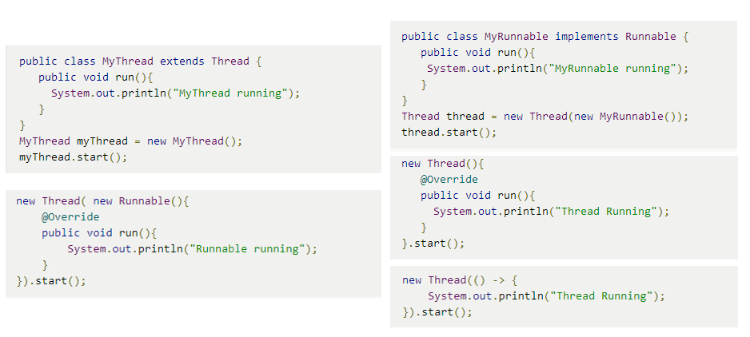
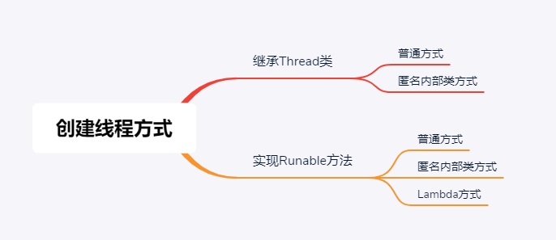

原文连接:https://www.cnblogs.com/lkxsnow/p/12089075.html
在文章开始之前先看一个问题，下图几种创建线程方式分别是什么，它们之间的区别和联系是什么？  如果可以轻松回答，那么本文对你来说过于基础，不用往下看啦，如果还有所迷惑，那就和Nauyus一起复习下创建线程的几种方式吧！
如何创建一个线程
Java线程类也是一个Object类,它的实例都继承自java.lang.Thread或其子类。 可以用如下方式用java中创建一个线程：
Thread thread = new Thread();
thread.start();
但是这样创建的线程会快速执行结束，因为线程所执行的内容是空的，如果需要线程执行自定义的代码， 有两种方式可以实现，一种是继承Thread类，覆写run方法将线程执行内容放入run方法中，另一种是实现Runable接口，将实现Runable接口的类作为参数传递给Thread类。因为匿名内部类和Java8 Lambda的出现，这两种方式又各有变体，但万变不离其宗，下面我们来看一下。
继承Thread类
第一种方法是继承Thread类，用自定义的run方法覆写父类方法实现传递线程执行代码：
public class MyThread extends Thread {
@Override
public void run(){
System.out.println("MyThread running");
}
}
MyThread myThread = new MyThread();
myThread.start();
继承Thread类——匿名内部类写法
对于那些只需实例化一次的代码如果每次都需要定义一个MyThread也是挺麻烦的，这就有了匿名内部类变体：
//匿名内部类
Thread thread = new Thread(){
@Override
public void run(){
System.out.println("Thread Running");
}
};
thread.start();
//还可以更简化
new Thread(){
@Override
public void run(){
System.out.println("Thread Running");
}
}.start();
实现Runable接口
还有一种创建多线程的方法是实现Runable接口，将实现Runable接口的类作为参数传递给Thread类，从而做到传递线程要执行代码的目的：
public class MyRunnable implements Runnable {
public void run(){
System.out.println("MyRunnable running");
}
}
Thread thread = new Thread(new MyRunnable());
thread.start();
实现Runable接口——匿名内部类
同样，我们可以使用匿名内部类简化代码：
//匿名内部类
Runnable myRunnable = new Runnable(){
public void run(){
System.out.println("Runnable running");
}
}
Thread thread = new Thread(myRunnable);
thread.start();
//还可以更简化
new Thread( new Runnable(){
@Override
public void run(){
System.out.println("Runnable running");
}
}).start();
实现Runable接口——Lambda表达式
好了到这里代码已经很简化了，但是我们再次看下这段代码：
其实除了System.out.println("Runnable running");是我们需要执行的线程体之外其他都是模版代码，那么为什么我们为了传递一行实际有用的代码要把整个类传递进去呢？ Java8提出了函数式编程思想，可以将一个函数作为参数直接传递给方法,并可以将函数使用Lambda表达式来简化表达，使用Lambda表达式创建的线程如下：
new Thread(() -> {
System.out.println("Thread Running");
}).start();
总结
下图总结了创建线程的方式，当然，实际应用中我们更多的使用线程池来创建一个线程，但是也离不开这些基础，更重要的是思想，好了关于线程池的部分我们以后文章再见。 
感谢阅读，原创不易，如有启发，点个赞吧！这将是我写作的最强动力！本文不同步发布于不止于技术的技术公众号
Nauyus,主要分享一些编程语言，架构设计，思维认知类文章， 2019年12月起开启周更模式，欢迎关注，共同学习成长！